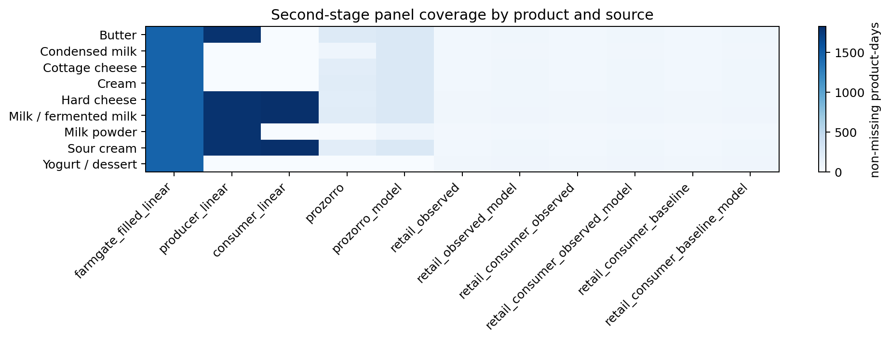
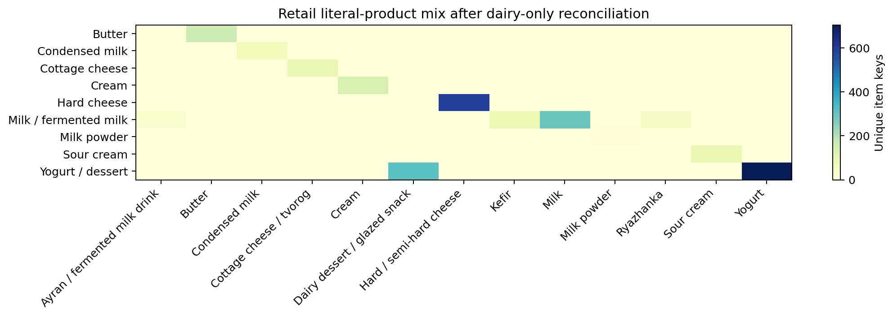
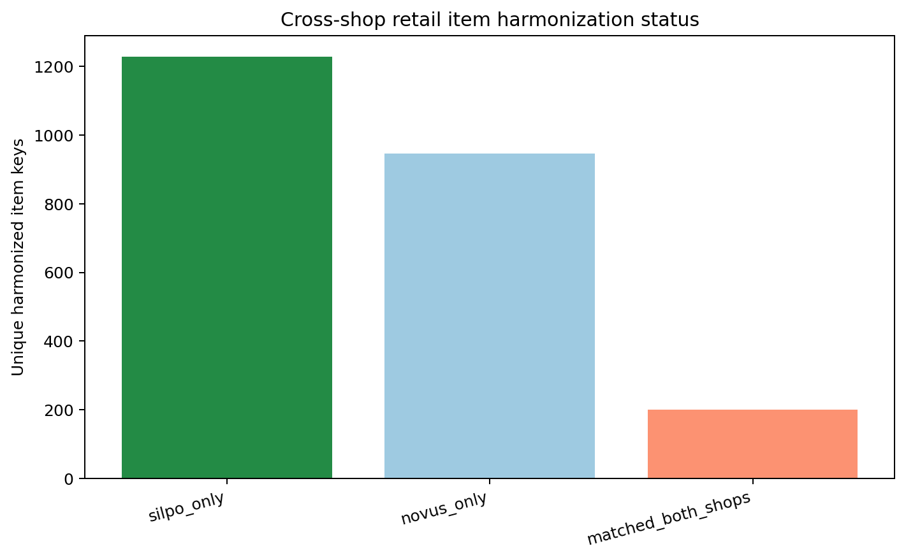
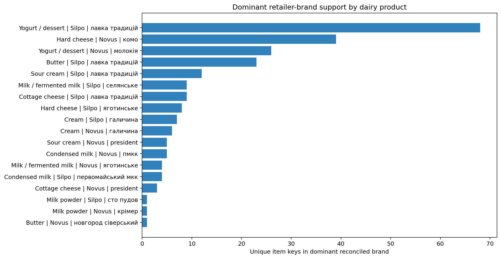
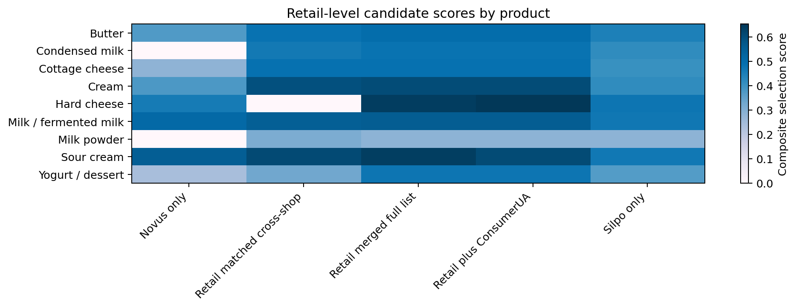
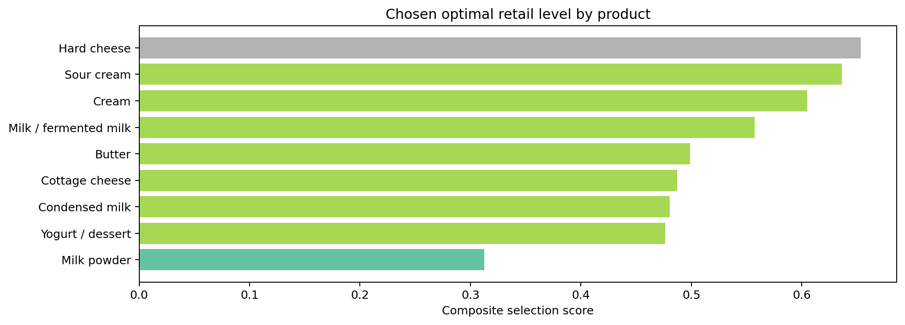
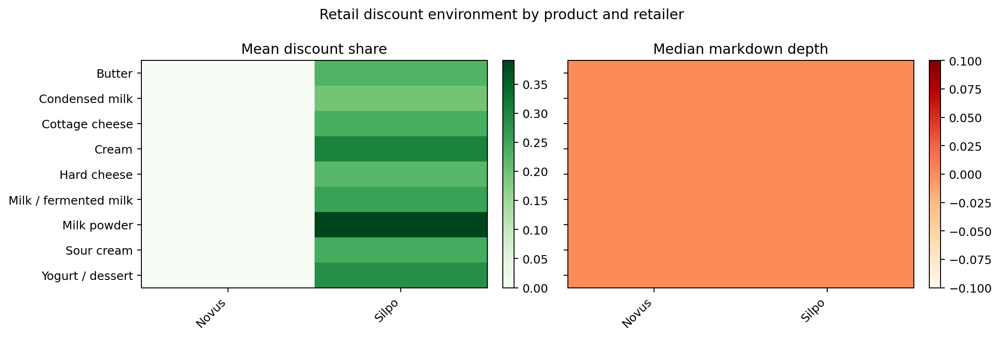

This chapter documents the second-stage data architecture used to complement the corrected master-thesis draft. The logic is intentionally close to the main thesis: each source is still treated as an institutional pricing layer, but the downstream retail block is rebuilt more deeply at item level so that Novus and Silpo contribute directly to the stage-4 model rather than only through broad category pooling.
The practical goal of the redesign is not to overturn the master-thesis structure. It is to improve it where the original bottleneck was strongest: retailer product naming, brand reconciliation, literal dairy-product typing, and explicit discount-aware construction of the effective retail price.
The second-stage chain still follows FarmGateUA -> ProducerUA -> ProZorro -> Retail. FarmGateUA remains the raw-milk benchmark, ProducerUA remains the processor-level domestic price layer, ProZorro remains the institutional procurement layer, and the retail block is rebuilt from harmonised Novus and Silpo product records. ConsumerUA is added as a downstream robustness environment, not as a replacement for the retailer-facing stage.
The cleaned second-stage panel covers 9 thesis product groups. The retail input after dairy-only reconciliation contains 78556 product-day observations, 362 normalised brand identifiers, and 13 literal dairy-product types. This is materially deeper downstream preparation than the summary-level retail block in the earlier second-stage run.
Figure 5.1. Second-stage panel coverage by product and source.

Source: author's calculations based on the second-stage panel coverage table.
Retail preparation now begins at the item level. Each row keeps the effective observed shelf price, meaning the discount is already embedded in the price actually faced by the buyer. At the same time, the discount amount, discount state, discount type, and markdown depth are retained as separate variables so that retail adjustment can be studied both through the price itself and through the promotional mechanism behind it.
Literal dairy typing is also made explicit. Instead of trusting the raw shop category alone, product titles, product names, brands, and auxiliary entity labels are cleaned jointly and mapped into literal dairy types such as milk, kefir, yogurt, hard cheese, cottage cheese, sour cream, cream, butter, condensed milk, and milk powder. Plant-based analogues and other non-comparable items are screened out before aggregation, which keeps the downstream series closer to the real dairy chain addressed in the thesis.
The reconciled literal mix is selective rather than generic: Yogurt / dessert -> Yogurt (705 item keys); Hard cheese -> Hard / semi-hard cheese (592 item keys); Yogurt / dessert -> Dairy dessert / glazed snack (318 item keys); Milk / fermented milk -> Milk (292 item keys); Butter -> Butter (163 item keys); Cream -> Cream (135 item keys).
Figure 5.2. Retail literal-product mix after dairy-only reconciliation.

Source: author's calculations based on the harmonised retail literal summary.
The core reconciliation object is the harmonised item key. It combines the thesis product group, the cleaned brand, and a canonicalised item name stripped of redundant pack and percentage tokens. This step is necessary because Novus and Silpo often refer to the same item with slightly different wording, word order, or packaging notation.
The resulting audit identifies 200 matched cross-shop item keys, 1229 Silpo-only keys, and 947 Novus-only keys. Among the matched keys, 106 cases also align one-for-one on the stricter fat-and-pack diagnostic key. This is exactly the kind of retailer-name adaptation that was missing from the broad category view.
Figure 5.3. Cross-shop retail item harmonisation status.

Source: author's calculations based on the retail match audit.
Brand support remains economically meaningful after reconciliation: Butter in Novus: новгород сіверський (1 item keys, 3 days); Butter in Silpo: лавка традицій (23 item keys, 48 days); Condensed milk in Novus: пмкк (5 item keys, 4 days); Condensed milk in Silpo: первомайський мкк (4 item keys, 48 days); Cottage cheese in Novus: president (3 item keys, 5 days); Cottage cheese in Silpo: лавка традицій (9 item keys, 48 days).
Figure 5.4. Dominant retailer-brand support by dairy product.

Source: author's calculations based on the reconciled retail brand-support table.
The retail endpoint is not forced into one representation. Instead, the second-stage pipeline constructs and keeps several candidate downstream levels: merged full-list retail, matched cross-shop retail, Silpo-only retail, Novus-only retail, and a retail-plus-ConsumerUA endpoint. Each level is useful for a different reason. The merged series maximises assortment support, the matched series maximises cross-shop comparability, Silpo and Novus preserve retailer-specific pricing behaviour, and the ConsumerUA-linked variant extends the downstream environment when retailer support is thin.
Candidate levels are compared product by product using a composite score that combines coverage, procurement alignment, consumer alignment, item-support depth, and discount variation. This complements the master-thesis draft because it keeps the same four-stage chain but tests whether stage 4 is better represented by a broader retail pool, a stricter matched subset, a retailer-specific panel, or a consumer-linked endpoint.
The selected level by product is as follows: Butter: Retail merged full list (score 0.50); Condensed milk: Retail merged full list (score 0.48); Cottage cheese: Retail merged full list (score 0.49); Cream: Retail merged full list (score 0.60); Hard cheese: Retail plus ConsumerUA (score 0.65); Milk / fermented milk: Retail merged full list (score 0.56); Milk powder: Retail matched cross-shop (score 0.31); Sour cream: Retail merged full list (score 0.64); Yogurt / dessert: Retail merged full list (score 0.48).
Figure 5.5. Candidate downstream retail scores by product.

Source: author's calculations based on the retail-level selection table.
Figure 5.6. Chosen optimal retail level by product.

Source: author's calculations based on the selected retail-level hierarchy.
Discount variables remain central because the user requested that the final effective price should include the markdown while the markdown mechanism itself remains modelled separately. This design matches the master-thesis interpretation more closely than a raw regular-price series would. It treats retail adjustment as a combination of baseline repricing and promotional smoothing, not as one undifferentiated observed price path.
Figure 5.7. Retail discount environment by product and retailer.

Source: author's calculations based on retailer-product discount states in the harmonised retail panel.
After reconciliation, the downstream data are no longer a loose category average. They are a hierarchy of comparable retail series supported by explicit item keys, literal product types, brand structure, and discount metadata. That makes the second-stage outputs much easier to defend as a robustness complement to the corrected thesis draft: the master thesis keeps the broader structural story, while this second-stage data chapter shows that the downstream block has been rebuilt in a more disciplined way.
The most important dataset files produced by this chapter are data/retail_items_full_harmonized.csv, data/retail_brand_daily.csv, data/retail_literal_summary.csv, data/retail_level_selection.csv, and data/retail_optimal_daily.csv. Together they document exactly how the stage-4 retail block was built before the models were rerun.